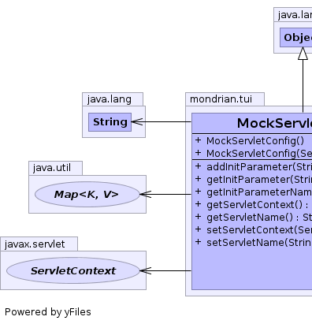

public class MockServletConfig extends Object implements javax.servlet.ServletConfig
If you need to add to this implementation, please do so.
|  |
| Constructor and Description |
|---|
MockServletConfig() |
MockServletConfig(javax.servlet.ServletContext servletContext) |
| Modifier and Type | Method and Description |
|---|---|
void |
addInitParameter(String key,
String value) |
String |
getInitParameter(String key)
Returns a String containing the value of the named initialization
parameter, or null if the parameter does not exist.
|
Enumeration |
getInitParameterNames()
Returns the names of the servlet's initialization parameters as an
Enumeration of String objects, or an empty Enumeration if the servlet
has no initialization parameters.
|
javax.servlet.ServletContext |
getServletContext()
Returns a reference to the ServletContext in which the servlet is
executing.
|
String |
getServletName()
Returns the name of this servlet instance.
|
void |
setServletContext(javax.servlet.ServletContext servletContext) |
void |
setServletName(String servletName) |
public MockServletConfig()
public MockServletConfig(javax.servlet.ServletContext servletContext)
public String getServletName()
getServletName in interface javax.servlet.ServletConfigpublic javax.servlet.ServletContext getServletContext()
getServletContext in interface javax.servlet.ServletConfigpublic String getInitParameter(String key)
getInitParameter in interface javax.servlet.ServletConfigpublic Enumeration getInitParameterNames()
getInitParameterNames in interface javax.servlet.ServletConfigpublic void setServletName(String servletName)
public void addInitParameter(String key, String value)
public void setServletContext(javax.servlet.ServletContext servletContext)